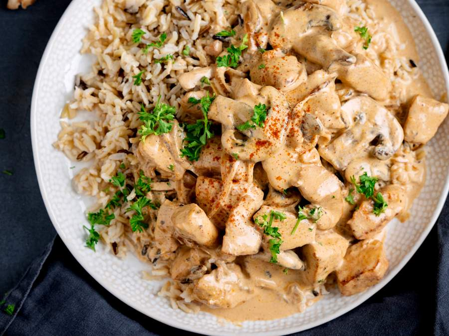

Home Bolo de Cenoura Bolo de Chocolate Strogonoff
Strogonoff
Ingredientes
- 1 caixa de creme de leite
- 200 ml de ketchup
- 1 colher de sal
- 300 grama de frango/carne
- 50 gramas de cogumelo 
- corte cubos de frango/carne
- os cozinhe em uma panela com óleo por 20 minutos
- pegue champingnom e os cozinhe junto do frango
- pegue uma vasilha
- jogue creme de leite e ketchup sal e outros temperos a gosto
- misture tudo
- pegue o molho e jogue na panela e misture com o frango
- aproveite essa iguaria